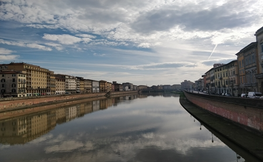
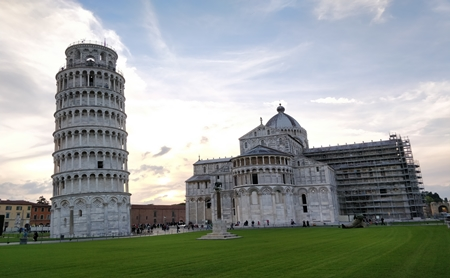
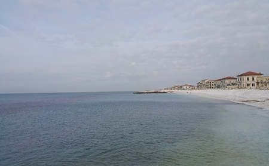
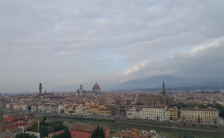
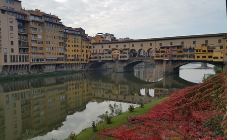
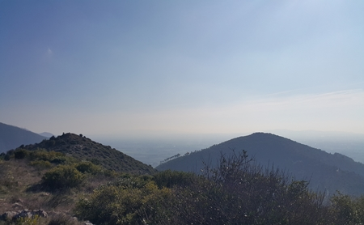

Dolce far niente - Piza i Florencja  Ponte di Mezzo - Piza, Włochy  Krzywa Wieża - Piza, Włochy  Nadmorska miejscowość w Toskanii, 10 km od Pizy Marina di Pisa - Włochy  zobacz zdjęcie Plac Św.Michała Anioła - Florencja, Włochy  Ponte Vecchio, Florencja, Włochy  Góry Pizańskie - Passo di Dante, Włochy